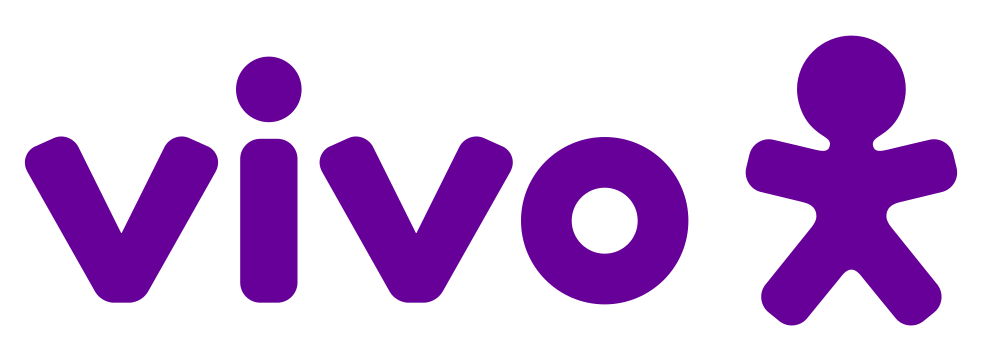

Sobre mim
Me chamo Vinicius, tenho 21 anos e sou apaixonado por esportes e tecnologia. Atualmente sou jogador de vôlei, mas também já fui jogador de rugby e futebol americano pelo Corinthians.
Habilidades
- Java
- Python
- JavaScript
- PostgreSQL
- HTML
- CSS
Experiência

Vivo — Estagiário Full Stack
Atuação com desenvolvimento full stack, IA e interface frontend.
Interesses
Esportes (vôlei, rugby e futebol americano), tecnologia, desenvolvimento de software, IA e projetos web.